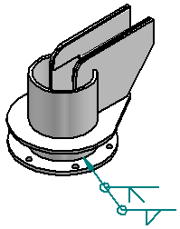

Label Weld command
Label Weld command
Labels edges as weld beads. You can use the Label Weld Options dialog box to define the settings you want for the weld label. You can define single operation weld labels, or compound operation weld labels.
When you select an edge on a part in the assembly or weldment, the edge changes color to indicate that it has been labeled. When you select an edge on a material addition feature, such as a protrusion feature, the entire feature changes color to indicate it has been labeled.
You can specify a cross section area for the weld label using the Label Weld Options dialog box. The length of the labeled edge and the cross section area you specify is used to compute the theoretical volume of the weld bead. This volume is then used when computing physical properties for the weldment.
Extracting weld symbol information onto the drawing
When defining weld features in an assembly, you can also use the Label Weld Options dialog box to define the settings you want for the weld symbol on the drawing. You can define single operation weld symbols, or compound operation weld symbols. When you set the Tie to Geometry option on the Weld Symbol command bar in the Draft environment, you can extract the weld symbol information onto the drawing.

How do I
Construct a fillet weldConstruct a stitch weld
Construct a groove weld
Label a weld
Insert a weldment in an Assembly
Create a Weldment Assembly
Learn more
WeldmentsCreating drawings of weldment assemblies
Look up more details
Fillet Weld commandFillet Weld command bar
Fillet Weld Options dialog box
Groove Weld command
Groove Weld command bar
Groove Weld Options dialog box
Label Weld command bar
Label Weld Options dialog box
Stitch Weld command
Stitch Weld command bar
Stitch Weld Options Dialog Box
Insert Weldment command
Insert Weldment command bar
Weldment Parameters dialog box
Weldment Assembly command
Weldment Assembly Dialog Box
Weldment File Type dialog box